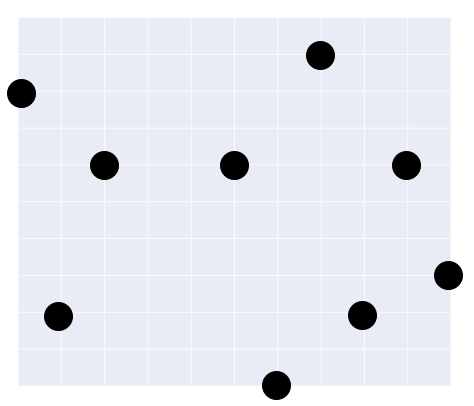

ここでは、第7回JOIの問題を要約して抜粋させていただきます。
また、次回の情報オリンピックは20回目になります。
問題が気になった方はぜひこちらでとけるので挑戦してみてください。
1000円札持っていて、N円のものを買います。
500円、100円、50円、10円、5円、1円を持っています。
おつりの枚数のうち最小のものを求めなさい。
e.g.)380 → 4
おつりは620円(500+100+10+10)で渡すのが最小となる。
与えられる文字列の中に"JOI"と"IOI"はいくつ出てくるか?
e.g.)JOIOIOIOI → JOI:1 IOI:3
1~2nまで書かれた2n枚のカードがある。
2人にn枚ずつ配り、カードを捨てていく。
カードを捨てるには、以下のような制約がある。
どちらかの手持ちがなくなった時、残っているカードの総和が得点となる。
2人の得点を求めなさい。
格子状に広がる空の格子点のいくつかに星がある。
探したい星座が存在するかを判定しなさい。

左の画像の星座は右の星空にあるか?という問題です。
JOIの予選は6問ありますが、5，6問目は説明が難しいので割愛させていただきます…
部員は、日々このような問題を解いて、JOIや、パソコン甲子園などの大会に向けています。